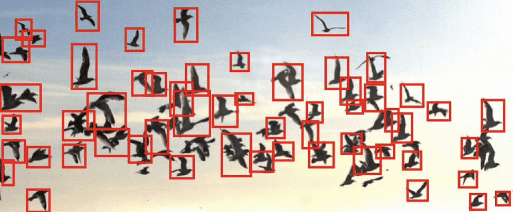
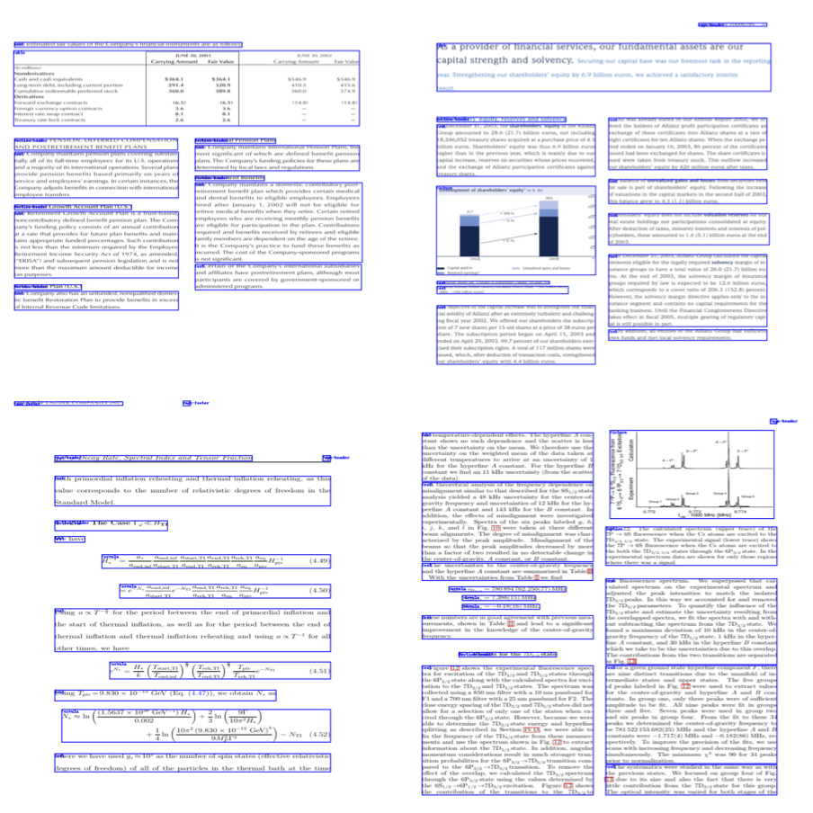
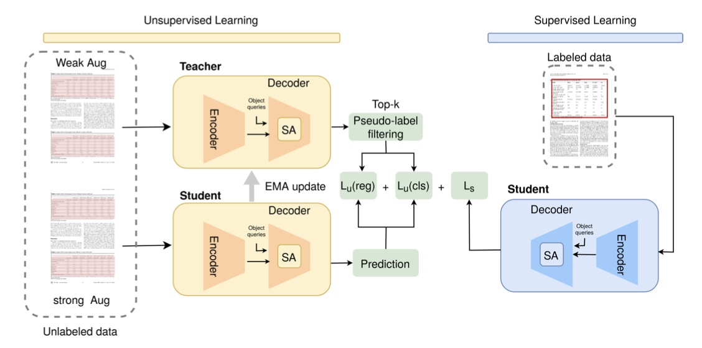
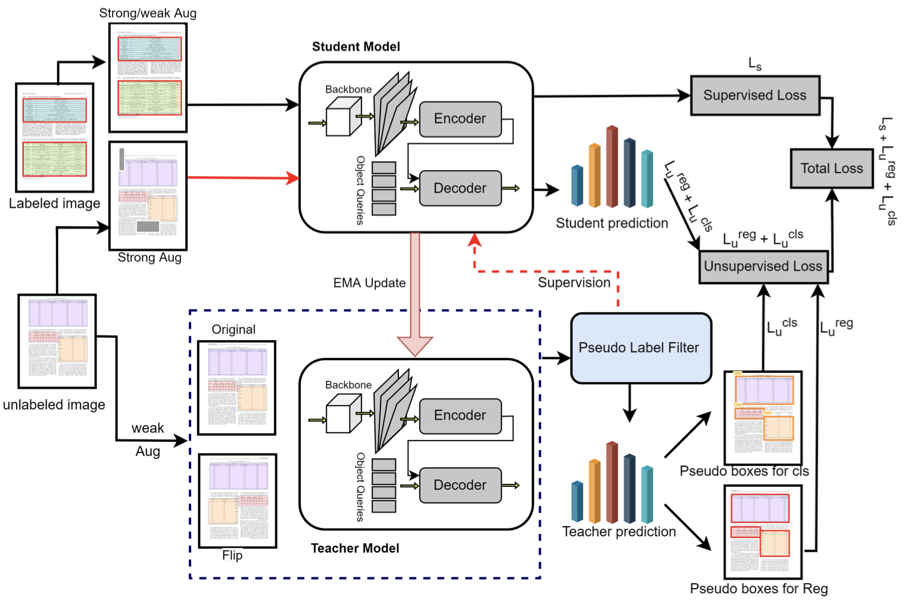
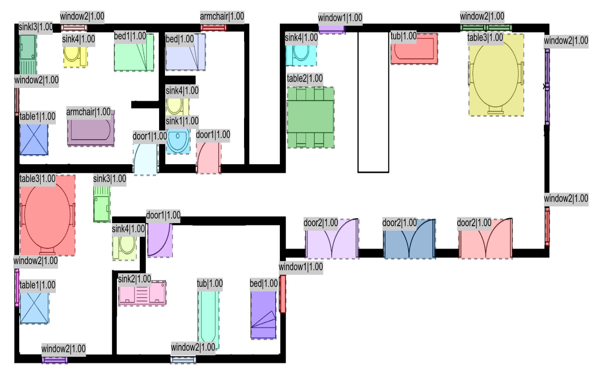
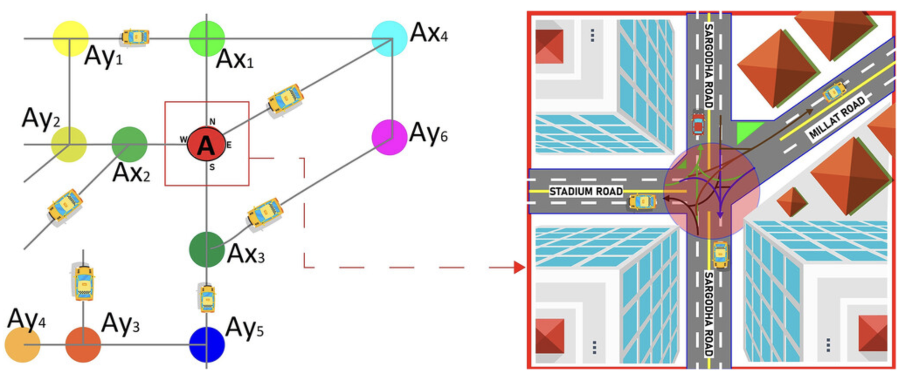
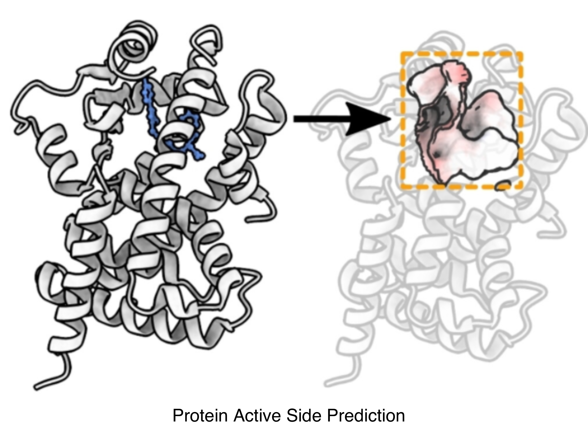
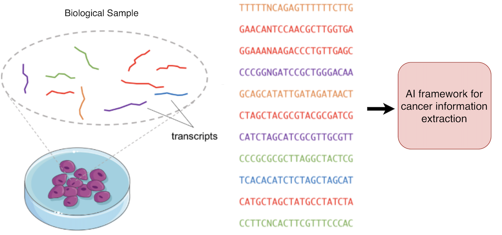

I am a Machine Learning Engineer at the German Research Center for Artificial Intelligence (DFKI) and a PhD Candidate in Computer Science at RPTU Kaiserslautern–Landau, supervised by Prof. Dr. Didier Stricker. My research advances robust and efficient visual perception, with a focus on semi-supervised learning, document intelligence, and object detection in challenging and low-annotation environments. My work has resulted in first-author publications at premier venues including CVPR, ICCV and ICDAR.
At DFKI, I lead research across multiple large-scale applied AI projects including semi-supervised object detection for complex 2D environments, a high-precision multimodal system for document layout analysis under the LUMINOUS project, and medical anomaly detection pipelines for the AIRISE initiative. I also completed an Applied AI Scientist internship at Tensorlake, San Francisco, where I worked on document intelligence systems, led VLM integration for document analysis, and developed data generation and post-processing pipelines for improving document layout, OCR accuracy, and strikethrough detection.
My research focuses on multimodal perception, data-efficient learning, and transformer architectures, with a long-term goal of enabling agentic AI systems that can autonomously understand, reason, and act based on visual information.
Projects

Target: Small, Occluded, and Rare Objects
Detection in Challenging Visual Environments
This project focuses on improving detection reliability for objects that are small, heavily occluded, or belong to visually rare categories. Traditional detectors often struggle when objects occupy only a few pixels, appear partially hidden, or lack strong representation in the training distribution. The system enhances spatial reasoning for dense scenes, recovers obscured object cues using contextual priors, and stabilizes category confidence for infrequent visual classes. This results in consistent performance across crowded environments, long-tail distributions, and real-world edge cases where conventional object detectors tend to fail.
Target: Document parsing
Document Layout Analsis in Challenging Visual Environments
This project focuses on improving detection reliability in complex document images containing diverse and densely arranged visual components. The system enhances spatial reasoning for dense layouts, integrates contextual priors to improve structural coherence, and stabilizes category confidence for components that typically challenge OCR and downstream document understanding. Beyond conventional layout elements such as text blocks, tables, figures, and forms, the pipeline supports citation extraction, handwritten and digital signature detection, strikethrough identification and removal, stamp and watermark localization, and other fine-grained document objects that are crucial for legal, academic, and financial document processing. The approach delivers robust and consistent performance across real-world conditions, long-tail distributions, and document edge cases where traditional parsers and rule-based detectors tend to break.
STEP-DETR: Advancing DETR-based Semi-Supervised Object Detection with Super Teacher and Pseudo-Label Guided Text QueriesT. Shehzadi, K.A.Hashmi, S.Sarode, D.Stricker, M.Z.Afzal
ICCV, 2025
Paper /
Supplementary /
Slides /
Poster /
BibTeX
×
@InProceedings{Shehzadi_2025_ICCV,
author = {Shehzadi, Tahira and Hashmi, Khurram Azeem and Sarode, Shalini and Stricker, Didier and Afzal, Muhammad Zeshan},
title = {STEP-DETR: Advancing DETR-based Semi-Supervised Object Detection with Super Teacher and Pseudo-Label Guided Text Queries},
booktitle = {Proceedings of the IEEE/CVF International Conference on Computer Vision (ICCV)},
month = {October},
year = {2025},
pages = {3069-3079}
}
Sparse Semi-DETR: Sparse Learnable Queries for Semi-Supervised Object DetectionT. Shehzadi, K.A.Hashmi, D.Stricker, M.Z.Afzal
CVPR, 2024
Paper /
Video /
Supplementary /
Slides /
Poster
Object Detection with Transformers: A ReviewT. Shehzadi, K.A.Hashmi, D.Stricker, M.Z.Afzal
Sensors, 2025
Paper /
Code
SemiTabDETR: End-to-End Semi-Supervised Table Detection with Transformer-based Enhanced Query ApproachT. Shehzadi, D.Stricker, M.Z.Afzal
ICDAR, 2025
Paper
Efficient Additive Attention for Transformer-based Semi-supervised Document Layout AnalysisT. Shehzadi, I.Ifza, D.Stricker, M.Z.Afzal
ICCV Workshop, 2025
Paper
Classroom-Inspired Multi-mentor Distillation with Adaptive Learning Strategies
S.Sarode, M.S.Khan,T. Shehzadi, D.Stricker, M.Z.Afzal
IntelliSys, 2025
Paper
DocSemi: Efficient Document Layout Analysis with Guided QueriesT. Shehzadi, I.Ifza, D.Stricker, M.Z.Afzal
ICCV Workshop, 2025
Paper
FD-SSD: Semi-supervised Detection of Bone Fenestration and Dehiscence in Intraoral ImagesT. Shehzadi, I.Ifza, D.Stricker, M.Z.Afzal
MIUA, 2025
Paper

A Hybrid Approach for Document Layout Analysis in Document imagesT. Shehzadi, D.Stricker, M.Z.Afzal
ICDAR, 2024
Paper

Towards End-to-End Semi-Supervised Table Detection with Semantic Aligned Matching TransformerT. Shehzadi, S.Sarode, D.Stricker, M.Z.Afzal
ICDAR, 2024
Paper
Enhanced Bank Check Security: Introducing a Novel Dataset and Transformer-Based Approach for Detection and Verification
M.S.Khan*, T. Shehzadi*, R.Noor, D.Stricker, M.Z.Afzal
ICDAR Workshop, 2024
Paper /
Code
End-to-End Semi-Supervised approach with Modulated Object Queries for Table Detection in Documents
I.Ehsan,T. Shehzadi, D.Stricker, M.Z.Afzal
IJDAR, 2024
Paper
UnSupDLA: Towards Unsupervised Document Layout Analysis
T.Sheikh*, T. Shehzadi*, R.Noor, D.Stricker, M.Z.Afzal
ICDAR Workshop, 2024
Paper
Semi-Supervised Object Detection: A Survey on Progress from CNN to TransformerT. Shehzadi, I.Ifza, D.Stricker, M.Z.Afzal
arXiv, 2024
Paper

Towards End-to-End Semi-Supervised Table Detection with Deformable TransformerT. Shehzadi, K.A.Hashmi, M.Liwicki, D.Stricker, M.Z.Afzal
ICDAR, 2023
Paper

Mask-Aware Semi-Supervised Object Detection in Floor PlansT. Shehzadi, K.A.Hashmi, D.Stricker, M.Z.Afzal
Sensors, 2022
Paper

Geometric features and traffic dynamic analysis on 4-leg intersections
W.Saeed, M.S.Saleh, M.N.Gull, H.Raza, R.Saeed, T. Shehzadi International Review of Applied Sciences and Engineering (IRASE), 2021
Paper

Protein Active Site Prediction for Early Drug Discovery and Designing
A.Yousaf, T. Shehzadi, A.Farooq, Komal Ilyas
International Review of Applied Sciences and Engineering (IRASE), 2021
Paper

Intelligent predictor using cancer-related biologically information extraction from cancer transcriptomesT. Shehzadi, A.Majid, M.Hameed, A.Farooq, A.Yousaf
Recent Advances in Electrical Engineering & Computer Sciences (RAEE & CS), 2020
Paper
Services
Reviewer of Conferences:
ICDAR2025, MIUA2025, WACV2025
Honors & Awards
DAAD Fellowship: Received PhD Scholarship (2021–2026)
NSF Travel Grant: For WiML Workshop at NeurIPS 2024
PIEAS Fellowship: Received merit based full scholarship for complete Masters
Nominated for the Two Academic Excellence Medals 2014 in Intermediate Studies


{kind=link}
{kind=link}